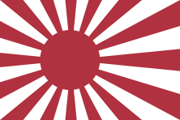
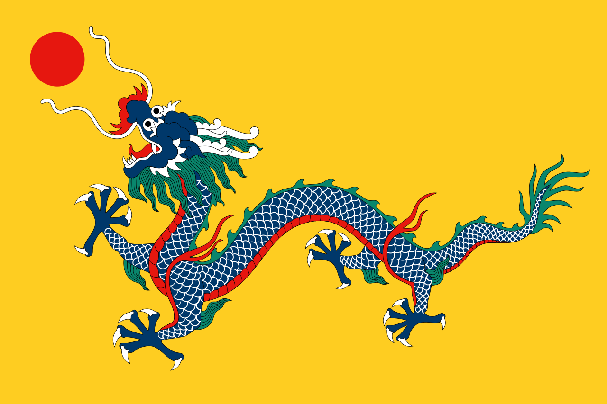
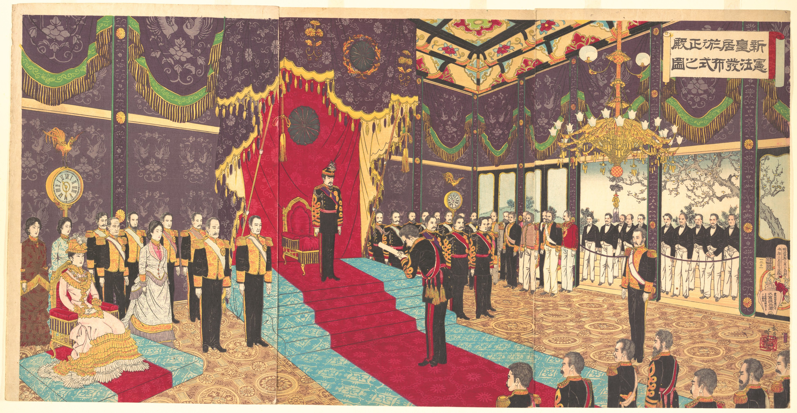
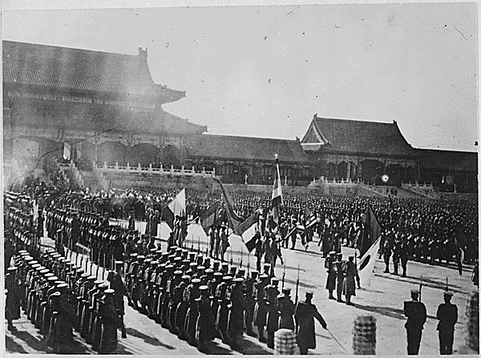
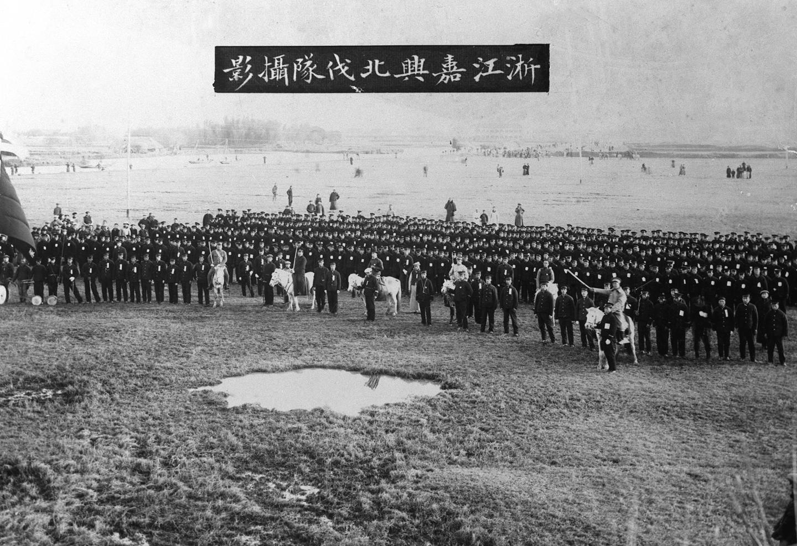
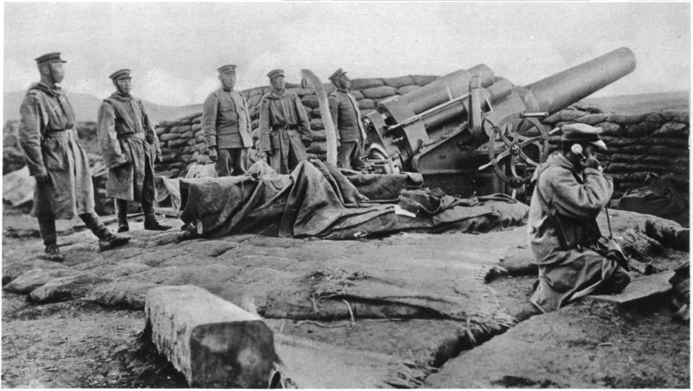

Japanese ports were forced to open to American ships. Japan's isolation period of more than 200 years known as Sakoku (鎖国, "locked country") ended and led to the collapse of the Shogun era.
France joined Britain and defeated Qing China in the Second Opium War. China was forced to concede more territories and pay large reparations.
Japan underwent political, military, economic, and social reforms to strengthen the nation and to centralize the power of Emperor Meiji. In 1889, with the adoption of the Meiji Constitution, Japan became Asia's first constitutional monarchy.
Source: 纪念辛亥革命100周年图片展
China was defeated and ceded the protectorate of Vietnam to France.
Also known as the Port Arthur Massacre, the Japanese military occupied the Lvshunkou district in Liaoning Province and began massacring Chinese soldiers and civilians on November 21, 1894, during the First Sino-Japanese War. An estimated 20,000 were killed in 4 days.
Source: The Metropolitan Museum of Art, New York, Gift of Lincoln Kirstein, 1959
The rebellion started as an anti-imperialist, anti-foreign and anti-Christian peasant uprising in Northern China led by the Boxer Militia (United in Righteousness), and later supported by Qing Empress Cixi. In response, the Eight-Nation Alliance sent troops to Beijing and defeated the Boxer militia and supporting Qing troops, followed by uncontrollable plunders and destructions. The Qing government paid billions in indemnity.
Source: Library of Congress, Prints & Photographs Division
More info
The Chinese Revolution led by Sun Yat-sen ended the monarchy rule of China and established the Republic of China. The new Republic quickly fell into political turmoil and local warlordism until 1928.
Japan joined Britain and its allies against Germany. After World War I, under the Treaty of Versailles, Japan gained control of Shantung (Shandong) Peninsula of China and other Pacific Islands previously under German control.
Source: The Illustrated War News, Number 21, December 30, 1914
After the First and Second Opium Wars (1839-42, 1856-60), the Sino-Japanese War (1894-1895), as well as the other forms of imperialists invasion in China, the Chinese felt threatened by outside powers. However, since China lacked a modernized military and had incurred millions of causalities from the wars, the Qing government was incapable of protecting the people.
Other groups stepped up to fulfill the role. By the late 1890s, a Chinese secret group, the Society of Righteous and Harmonious Fists, had begun carrying out regular attacks on foreign missionaries and Chinese Christians. This was the beginning of the anti-foreigner Boxer Rebellion.
A Chinese secret organization in the late Qing dynasty in China, known as “Boxers” in English due to its participants being well-trained in martial arts.
Their goal was to lead an uprising in Northern China against the spread of Western and Japanese imperialism across Chinese territory.
Provincial leaders and the Chinese imperial court varied in their stances towards thee group, since Boxer activity spread widely; there was no unified government response.
Their slogan: “Support the Qing government and exterminate the foreigners” (扶清滅洋)
As foreign influence expanded rapidly in China, the supporters of Boxers also increased exponentially with the intent of restoring Chinese's domination and culture. Initially, The Qing government remained silence towards the boxer movement. Violence against Western power and missionaries began to intensify. As a result, foreign powers pressured the Imperial authority to defend the Christian communities. In order to blunt the Boxers' threat to the dynasty, the Qing empress (Cixi) sided with Boxers against Westerners. However, the Boxer Rebellion was soon put down by the troops of the Eight-Nation Alliance.
Background of the Eight-Nation Alliance: The Boxers had been attacking and killing foreign missionaries across northern China, with the Qing government tacitly condoning their actions.
In response to the Rebellions, Germany, Japan, Russia, Britain, France, United States, Italy, and Austria-Hungary sent approximately 45,000 troops to Northern China. This would be known as the Eight-Nation Alliance.
By August of 1900, the movement of Boxers had spread to Beijing. Their actions included torching Western churches, murdering Chinese Christians and attacking foreigners in Beijing.
Britain led the Eight-Nation Alliance to rescue the besieged foreign citizens in Beijing from 14th and 15th August 1900.